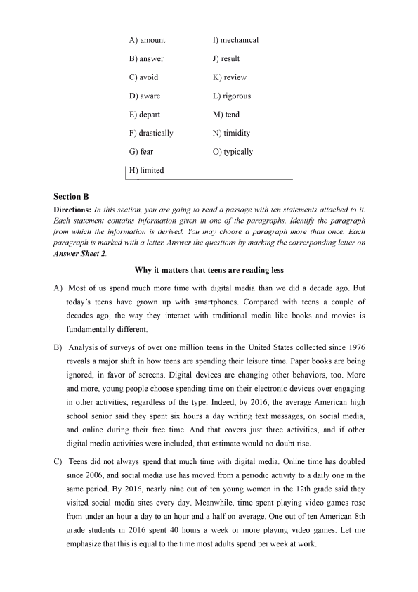
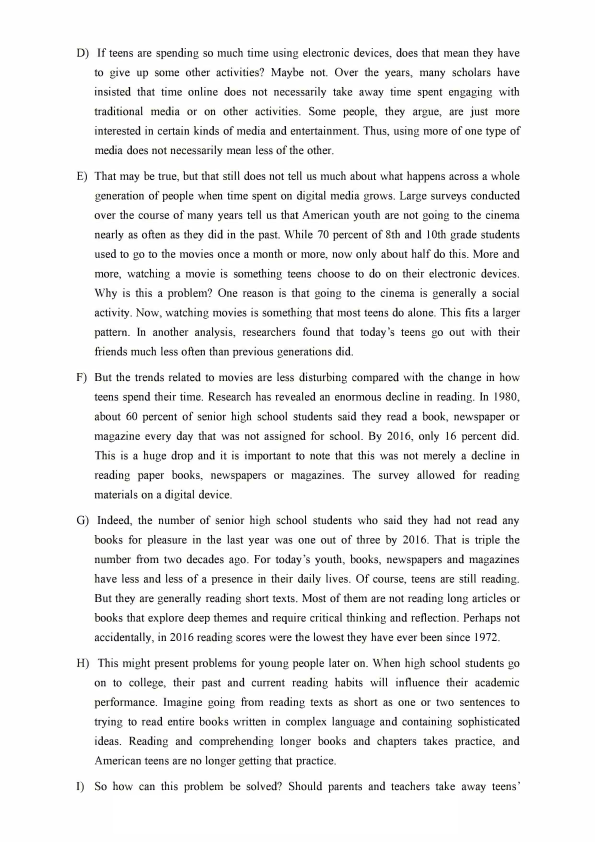
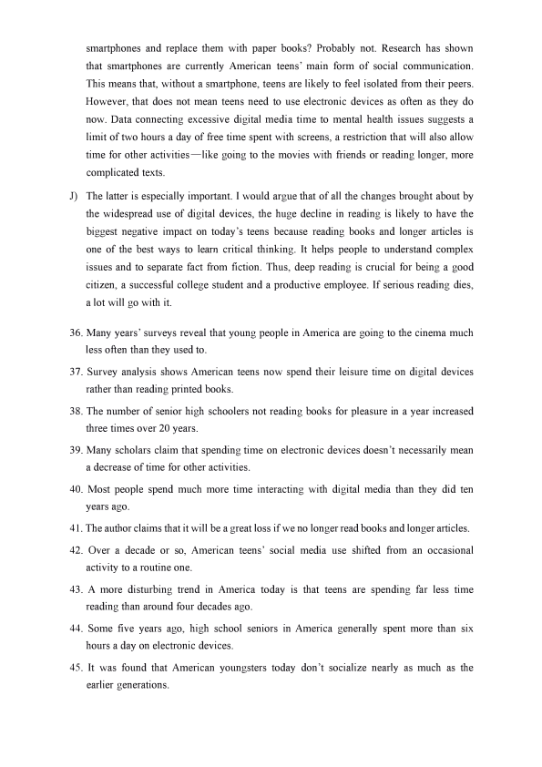
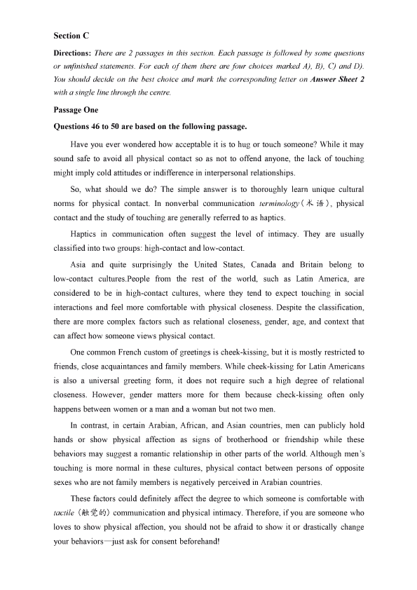
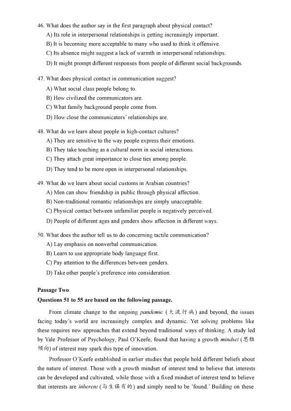
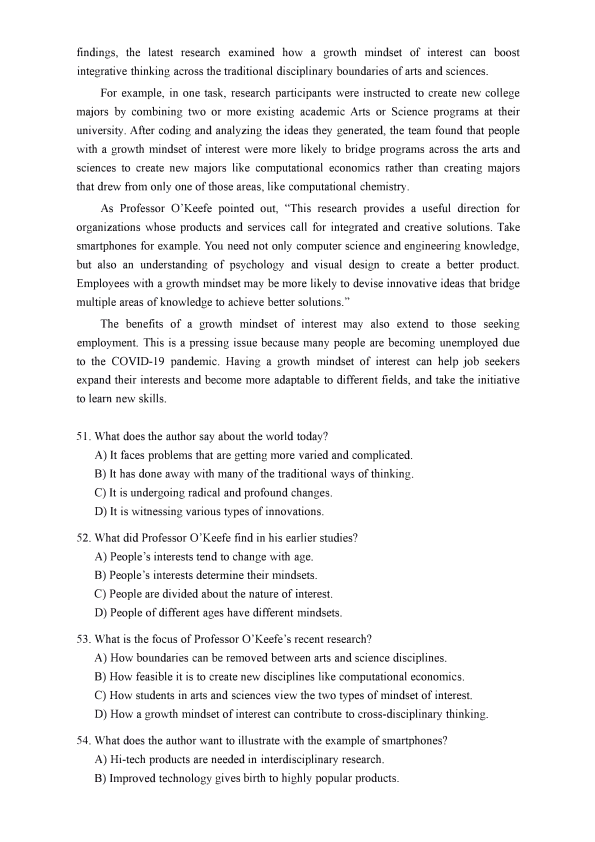
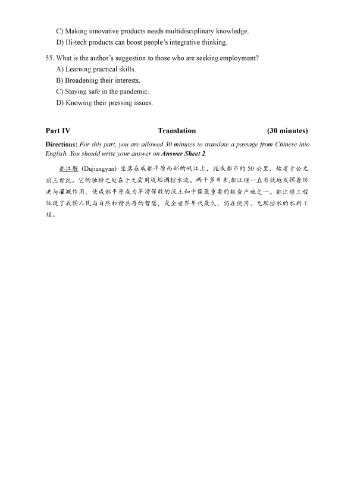

第 1 / 8 页

2021年12月大学英语四级考试真题（第3套）
Part I
Writing
(30 minutes)
Directions: Suppose you have丿ust participated in a school project of collecting used books on
campus. You are now to write a report about the project, which may include its aim, organizers,
participants and activities. You will have 30 minutes to write the report. ou should write at
least 120 words but no more than 180 words.
Part II
Listening Comprehension
(25 minutes)
说明：2021 年12 月大学英语四级考试全国共考了两套听力。本套的听力内容与第二套相同，
因此本套听力部分不再重复给出。
Part III
Section A
Reading Comprehension
(40 minutes)
Directions: In this section, there is a passage with ten blanks. You are required to select one
word for each blank from a list of choices given in a word bank following the passage. Read the
passage through carefully before making your choices, Each choice in the bank is identfied by
a letter. Please mark the corresponding letter for each item on Answer Sheet 2 with a single
line through the centre. You may not use any of the words in the bank more than once.
Questions 26 to 35 are based on the ollowing passage.
The sheets are damp with sweat. You're cold, but your heart is racing as if a killer just
chased you down a dark street. It was just a nightmare, you tell yourself; there's nothing to
be araid o. But you're still illed withL.
Given how unsettling and haunting nightmares can be, is there a way or dreamers to
D_, or even n of, these bad dreams as they happen?
Research is_, but some studies suggest that people who can master lucid
dreaming-that is, the ab山ty to be_that a nightmare is happening and possibly even
control it without waking up—may hold the _.
Nightmares are part of the human experience, especially or kids. Doctors_don't
consider occasional nightmares a problem. They can just be symptoms of a sleep disorder
that can L rom an unpleasant experience, stress, or certain drugs.
To treat the disorder, there are a number of medicines and therapies that are
backed by _research, according to the American Academy of Sleep Medicine,
which analyzed the available research on the treatment of nightmare disorder in a recent
_published in the Journal of Clinical Sleep Medicine
However, nightmares are complicated, and researchers are still struggling
to understand them, said Dr. Rachel Salas, an expert on sleep disorders and an
associate proessor at Johns Hopkins Medicine in Baltimore. What we do know is
that people_lL to have diferent kinds of nightmares at diferent points during the
sleep cycle.
26
27
28
29
30
31
32
33
34
35
查看 / 复制本页文字
2021年12月大学英语四级考试真题（第3套） Part I Writing (30 minutes) Directions: Suppose you have丿ust participated in a school project of collecting used books on campus. You are now to write a report about the project, which may include its aim, organizers, participants and activities. You will have 30 minutes to write the report. ou should write at least 120 words but no more than 180 words. Part II Listening Comprehension (25 minutes) 说明：2021 年12 月大学英语四级考试全国共考了两套听力。本套的听力内容与第二套相同， 因此本套听力部分不再重复给出。 Part III Section A Reading Comprehension (40 minutes) Directions: In this section, there is a passage with ten blanks. You are required to select one word for each blank from a list of choices given in a word bank following the passage. Read the passage through carefully before making your choices, Each choice in the bank is identfied by a letter. Please mark the corresponding letter for each item on Answer Sheet 2 with a single line through the centre. You may not use any of the words in the bank more than once. Questions 26 to 35 are based on the ollowing passage. The sheets are damp with sweat. You're cold, but your heart is racing as if a killer just chased you down a dark street. It was just a nightmare, you tell yourself; there's nothing to be araid o. But you're still illed withL. Given how unsettling and haunting nightmares can be, is there a way or dreamers to D_, or even n of, these bad dreams as they happen? Research is_, but some studies suggest that people who can master lucid dreaming-that is, the ab山ty to be_that a nightmare is happening and possibly even control it without waking up—may hold the _. Nightmares are part of the human experience, especially or kids. Doctors_don't consider occasional nightmares a problem. They can just be symptoms of a sleep disorder that can L rom an unpleasant experience, stress, or certain drugs. To treat the disorder, there are a number of medicines and therapies that are backed by _research, according to the American Academy of Sleep Medicine, which analyzed the available research on the treatment of nightmare disorder in a recent _published in the Journal of Clinical Sleep Medicine However, nightmares are complicated, and researchers are still struggling to understand them, said Dr. Rachel Salas, an expert on sleep disorders and an associate proessor at Johns Hopkins Medicine in Baltimore. What we do know is that people_lL to have diferent kinds of nightmares at diferent points during the sleep cycle. 26 27 28 29 30 31 32 33 34 35
第 2 / 8 页

A) amount
I) mechanical
B) answer
J) result
C) avoid
K) review
D) aware
L) rigorous
E) depart
M) tend
F) drastically
N) timidity
G) ear
0) typically
凇limited
Section B
Directions: In this section, you are going to read a passage with ten statements attached to it.
Each statement contains information given in one of the paragraphs. Identy the paragraph
from which the information is derive. You may choose a paragrph more than once. Each
paragraph is marked with a lette. Answer the questions by marking the corresponding letter on
Answer Sheet 2.
Why it matters that teens are reading less
A) Most of us spend much more time with digital media than we did a decade ago. But
today's teens have grown up with smartphones. Compared with teens a couple of
decades ago, the way they interact with traditional media like books and movies is
undamentally diferent.
B) Analysis of surveys of over one million teens in the United States collected since 1976
reveals a major shift in how teens are spending their leisure time. Paper books are being
ignored, in avor of screens. D屯ital devices are changing other behaviors, too. More
and more, young people choose spending time on their electronic devices over engaging
in other activities, regardless of the type. Indeed, by 2016, the average American high
school senior said they spent six hours a day writing text messages, on social med团，
and online during their ree time. And that covers just three activities, and if other
digital media activities were included, that estimate would no doubt rise.
C)
Teens did not always spend that much time with digital media. Online time has doubled
since 2006, and social media use has moved rom a periodic activity to a daily one in the
same period. By 2016, nearly nine out of ten young women in the 12th grade said they
visited social media sites every day. Meanwhile, time spent playing video games rose
rom under an hour a day to an hour and a half on average. One out of ten American 8th
grade students in 2016 spent 40 hours a week or more playing video games. Let me
emphasize that this is equal to the time most adults spend per week at work.
查看 / 复制本页文字
A) amount I) mechanical B) answer J) result C) avoid K) review D) aware L) rigorous E) depart M) tend F) drastically N) timidity G) ear 0) typically 凇limited Section B Directions: In this section, you are going to read a passage with ten statements attached to it. Each statement contains information given in one of the paragraphs. Identy the paragraph from which the information is derive. You may choose a paragrph more than once. Each paragraph is marked with a lette. Answer the questions by marking the corresponding letter on Answer Sheet 2. Why it matters that teens are reading less A) Most of us spend much more time with digital media than we did a decade ago. But today's teens have grown up with smartphones. Compared with teens a couple of decades ago, the way they interact with traditional media like books and movies is undamentally diferent. B) Analysis of surveys of over one million teens in the United States collected since 1976 reveals a major shift in how teens are spending their leisure time. Paper books are being ignored, in avor of screens. D屯ital devices are changing other behaviors, too. More and more, young people choose spending time on their electronic devices over engaging in other activities, regardless of the type. Indeed, by 2016, the average American high school senior said they spent six hours a day writing text messages, on social med团， and online during their ree time. And that covers just three activities, and if other digital media activities were included, that estimate would no doubt rise. C) Teens did not always spend that much time with digital media. Online time has doubled since 2006, and social media use has moved rom a periodic activity to a daily one in the same period. By 2016, nearly nine out of ten young women in the 12th grade said they visited social media sites every day. Meanwhile, time spent playing video games rose rom under an hour a day to an hour and a half on average. One out of ten American 8th grade students in 2016 spent 40 hours a week or more playing video games. Let me emphasize that this is equal to the time most adults spend per week at work.
第 3 / 8 页

D) If teens are spending so much time using electronic devices, does that mean they have
to give up some other activities? Maybe not. Over the years, many scholars have
画sted that time online does not necessarily take away time spent engaging with
traditional media or on other activities. Some people, they argue, are just more
interested in certain kinds of media and entertainment. Thus, using more of one type of
media does not necessarily mean less of the other.
E) That may be true, but that still does not tell us much about what happens across a whole
generation of people when time spent on digital media grows. Large surveys conducted
over the course of many years tell us that American youth are not going to the cinema
nearly as oten as they did in the past. While 70 percent of 8th and 10th grade students
used to go to the movies once a month or more, now only about half do this. More and
more, watching a movie is something teens choose to do on their electronic devices.
Why is this a problem? One reason is that going to the cinema is generally a social
activity. Now, watching movies is something that most teens do alone. This its a larger
patten. In another analysis, researchers ound that today's teens go out with their
扣ends much less oten than previous generations did.
F) But the trends related to movies are less disturbing compared with the change in how
teens spend their time. Research has revealed an eno皿s decline in reading. In 1980,
about 60 percent of senior high school students said they read a book, newspaper or
magazine every day that was not assigned or school. By 2016, only 16 percent did.
This is a huge drop and it is important to note that this was not merely a decline in
reading paper books, newspapers or magazines. The survey allowed or reading
materials on a digital device.
G) Indeed, the number of senior high school students who said they had not read any
books or pleasure in the last year was one out of three by 2016. That is triple the
number rom two decades ago. For today's youth, books, newspapers and magazines
have less and less of a presence in their daily lives. Of course, teens are still reading
But they are generally reading short texts. Most of them are not reading long articles or
books that explore deep themes and require critical thinking and relection. Perhaps not
accidentally, in 2016 reading scores were the lowest they have ever been since 1972.
H) This might present problems or young people later on. When high school students go
on to college, their past and current reading habits will inluence their academic
perormance. Imagine going rom reading texts as short as one or two sentences to
trying to read entire books written in complex language and containing sophisticated
ideas. Reading and comprehending longer books and chapters takes practice, and
American teens are no longer getting that practice.
I)
So how can this problem be solved? Should parents and teachers take away teens'
查看 / 复制本页文字
D) If teens are spending so much time using electronic devices, does that mean they have to give up some other activities? Maybe not. Over the years, many scholars have 画sted that time online does not necessarily take away time spent engaging with traditional media or on other activities. Some people, they argue, are just more interested in certain kinds of media and entertainment. Thus, using more of one type of media does not necessarily mean less of the other. E) That may be true, but that still does not tell us much about what happens across a whole generation of people when time spent on digital media grows. Large surveys conducted over the course of many years tell us that American youth are not going to the cinema nearly as oten as they did in the past. While 70 percent of 8th and 10th grade students used to go to the movies once a month or more, now only about half do this. More and more, watching a movie is something teens choose to do on their electronic devices. Why is this a problem? One reason is that going to the cinema is generally a social activity. Now, watching movies is something that most teens do alone. This its a larger patten. In another analysis, researchers ound that today's teens go out with their 扣ends much less oten than previous generations did. F) But the trends related to movies are less disturbing compared with the change in how teens spend their time. Research has revealed an eno皿s decline in reading. In 1980, about 60 percent of senior high school students said they read a book, newspaper or magazine every day that was not assigned or school. By 2016, only 16 percent did. This is a huge drop and it is important to note that this was not merely a decline in reading paper books, newspapers or magazines. The survey allowed or reading materials on a digital device. G) Indeed, the number of senior high school students who said they had not read any books or pleasure in the last year was one out of three by 2016. That is triple the number rom two decades ago. For today's youth, books, newspapers and magazines have less and less of a presence in their daily lives. Of course, teens are still reading But they are generally reading short texts. Most of them are not reading long articles or books that explore deep themes and require critical thinking and relection. Perhaps not accidentally, in 2016 reading scores were the lowest they have ever been since 1972. H) This might present problems or young people later on. When high school students go on to college, their past and current reading habits will inluence their academic perormance. Imagine going rom reading texts as short as one or two sentences to trying to read entire books written in complex language and containing sophisticated ideas. Reading and comprehending longer books and chapters takes practice, and American teens are no longer getting that practice. I) So how can this problem be solved? Should parents and teachers take away teens'
第 4 / 8 页

smartphones and replace them with paper books? Probably not. Research has shown
that smartphones are currently American teens'main orm of social communication.
This means that, without a smartphone, teens are likely to eel isolated rom their peers
However, that does not mean teens need to use electronic devices as oten as they do
now. Data connecting excessive digital media time to mental health issues suggests a
limit of two hours a day of ree time spent with screens, a restriction that will also allow
time or other activities—like going to the movies with riends or reading longer, more
complicated texts.
J) The latter is especially important. I would argue that of all the changes brought about by
the widespread use of digital devices, the huge decline in reading is likely to have the
biggest negative impact on today's teens because reading books and longer articles is
one of the best ways to lean critical thinking. It helps people to understand complex
issues and to separate act rom iction. Thus, deep reading is crucial or being a good
citizen, a successul college student nd a productive employee. If serious reading d比s,
a lot will go with it.
36. Many years'surveys reveal that young people in America are going to the cinema much
less oten than they used to.
37. Survey analysis shows American teens now spend their leisure time on digital devices
rather than reading printed books.
38. The number of senior high schoolers not reading books or pleasure in a year increased
three times over 20 years.
39. Many scholars claim that spending time on electronic devices doesn't necessarily mean
a decrease of time or other activities.
40. Most people spend much more time interacting with digital media than they did ten
years ago.
41. The auhor claims that it will be a great loss if we no longer read books and longer articles.
42. Over a decade or so, American teens' social media use shifted rom an occasional
activity to a routine one.
43. A more disturbing trend in America today is that teens are spending ar less time
reading than around our decades ago.
44. Some ive years ago, high school seniors in America generally spent more than six
hours a day on electronic devices.
45. It was ound that American youngsters today don't socialize nearly as much as the
earlier generations.
查看 / 复制本页文字
smartphones and replace them with paper books? Probably not. Research has shown that smartphones are currently American teens'main orm of social communication. This means that, without a smartphone, teens are likely to eel isolated rom their peers However, that does not mean teens need to use electronic devices as oten as they do now. Data connecting excessive digital media time to mental health issues suggests a limit of two hours a day of ree time spent with screens, a restriction that will also allow time or other activities—like going to the movies with riends or reading longer, more complicated texts. J) The latter is especially important. I would argue that of all the changes brought about by the widespread use of digital devices, the huge decline in reading is likely to have the biggest negative impact on today's teens because reading books and longer articles is one of the best ways to lean critical thinking. It helps people to understand complex issues and to separate act rom iction. Thus, deep reading is crucial or being a good citizen, a successul college student nd a productive employee. If serious reading d比s, a lot will go with it. 36. Many years'surveys reveal that young people in America are going to the cinema much less oten than they used to. 37. Survey analysis shows American teens now spend their leisure time on digital devices rather than reading printed books. 38. The number of senior high schoolers not reading books or pleasure in a year increased three times over 20 years. 39. Many scholars claim that spending time on electronic devices doesn't necessarily mean a decrease of time or other activities. 40. Most people spend much more time interacting with digital media than they did ten years ago. 41. The auhor claims that it will be a great loss if we no longer read books and longer articles. 42. Over a decade or so, American teens' social media use shifted rom an occasional activity to a routine one. 43. A more disturbing trend in America today is that teens are spending ar less time reading than around our decades ago. 44. Some ive years ago, high school seniors in America generally spent more than six hours a day on electronic devices. 45. It was ound that American youngsters today don't socialize nearly as much as the earlier generations.
第 5 / 8 页

Section C
Directions: There are 2 passages in this section. Each passage is followed by some questions
or unfinished statements. For each of them there are four choices marked AJ, BJ, J and DJ
You should decide on the best choice and mark the corresponding letter on Answer Sheet 2
with a single line through the centre.
Passage One
Questions 46 to 50 are based on the ollowing passage.
Have you ever wondered how acceptable it is to hug or touch someone? While it may
sound sae to avoid all physical contact so as not to ofend anyone, the lack of touching
血ght imply cold attitudes or indiference in interpersonal relationships.
So, what should we do? The simple answer is to thoroughly len unique cultural
norms or physical contact. In nonverbal communication terminoloy (术语），physical
contact and the study of touching are generally reerred to as haptics
Haptics in communication often suggest the level of intimacy. They are usually
classiied into two groups: high-contact and low-contact.
Asia and quite surprisingly the United States, Canada and Britain belong to
low-contact cultures.People rom the rest of the world, such as Latin America, are
considered to be in high-contact cultures, where they tend to expect touching in social
interactions and eel more comortable with physical closeness. Despite the classiication,
there are more complex actors such as relational closeness, gender, age, and context that
can afect how someone views physical contact.
One common French custom of greetings is cheek-kissing, but it is mostly restricted to
扣ends, close acquaintances and amily members. While cheek-kissing or Latin Americans
is also a universal greeting orm, it does not require such a high degree of relational
closeness. However, gender matters more or them because check如ssing oten only
happens between women or a man and a woman but not two men.
In contrast, in certain Arabian, Arican, and Asian countries, men can publicly hold
hands or show physical afection as signs of brotherhood or riendship while these
behaviors may suggest a romantic relationship in other parts of the world. Although men's
touching is more normal in these cultures, physical contact between persons of opposite
sexes who are not amily members is negatively perceived in Arabian countries.
These actors could deinitely afect the degree to which someone is comortable with
tactile （触觉的）communication and physical intimacy. Thereore, if you are someone who
loves to show physical afection, you should not be araid to show it or drastically change
your behaviors—just ask or consent beorehand!
查看 / 复制本页文字
Section C Directions: There are 2 passages in this section. Each passage is followed by some questions or unfinished statements. For each of them there are four choices marked AJ, BJ, J and DJ You should decide on the best choice and mark the corresponding letter on Answer Sheet 2 with a single line through the centre. Passage One Questions 46 to 50 are based on the ollowing passage. Have you ever wondered how acceptable it is to hug or touch someone? While it may sound sae to avoid all physical contact so as not to ofend anyone, the lack of touching 血ght imply cold attitudes or indiference in interpersonal relationships. So, what should we do? The simple answer is to thoroughly len unique cultural norms or physical contact. In nonverbal communication terminoloy (术语），physical contact and the study of touching are generally reerred to as haptics Haptics in communication often suggest the level of intimacy. They are usually classiied into two groups: high-contact and low-contact. Asia and quite surprisingly the United States, Canada and Britain belong to low-contact cultures.People rom the rest of the world, such as Latin America, are considered to be in high-contact cultures, where they tend to expect touching in social interactions and eel more comortable with physical closeness. Despite the classiication, there are more complex actors such as relational closeness, gender, age, and context that can afect how someone views physical contact. One common French custom of greetings is cheek-kissing, but it is mostly restricted to 扣ends, close acquaintances and amily members. While cheek-kissing or Latin Americans is also a universal greeting orm, it does not require such a high degree of relational closeness. However, gender matters more or them because check如ssing oten only happens between women or a man and a woman but not two men. In contrast, in certain Arabian, Arican, and Asian countries, men can publicly hold hands or show physical afection as signs of brotherhood or riendship while these behaviors may suggest a romantic relationship in other parts of the world. Although men's touching is more normal in these cultures, physical contact between persons of opposite sexes who are not amily members is negatively perceived in Arabian countries. These actors could deinitely afect the degree to which someone is comortable with tactile （触觉的）communication and physical intimacy. Thereore, if you are someone who loves to show physical afection, you should not be araid to show it or drastically change your behaviors—just ask or consent beorehand!
第 6 / 8 页

46. What does the author say in the irst paragraph about physical contact?
A) Its role in interpersonal relationships is getting increasingly important
B) It is becoming more acceptable to many who used to think it ofensive.
C) Its absence might suggest a lack of warmth in interpersonal relationships
D) It might prompt diferent responses rom people of diferent social backgrounds
4 7. What does physical contact in communication suggest?
A) What social class people belong to
B) How civilized the communicators are.
C) What amily background people come rom
D) How close the communicators' relationships are.
48. What do we len about people in high-contact cultures?
A) They are sensitive to the way people express their emotions
B) They take touching as a cultural norm in social interactions.
C) They attach great importance to close ties among people
D) They tend to be more open in interpersonal relationships
49. What do we lean about social customs in Arabian countries?
A) Men can show riendship in public through physical afection
B) Non-trad山onal romantic relationships are simply unacceptable
C) Physical contact between unamiliar people is negatively perceived
D) People of diferent ages and genders show afection in diferent ways
50. What does the author tell us to do concening tactile communication?
A) Lay emphasis on nonverbal communication.
B) Lean to use appropriate body language irst
C) Pay attention to the diferences between genders.
D) Take other people's preerence into consideration.
Passage Two
Questions 51 to 55 are based on the ollowing passage.
From climate change to the ongoing pandemic (大流行病） and beyond, the issues
acing today's world are increasingly complex and dynamic. Yet solving problems like
these requires new approaches that extend beyond traditional ways of thinking. A study led
by Yale Proessor of Psychology, Paul O'Keee, ound that having a growth mindset（思维
倾向） of interest may spark this type of innovation
Proessor O'Keee established in earlier stud比s that people hold diferent beliefs about
the nature of interest. Those with a growth mindset of interest tend to believe that interests
can be developed and cultivated, while those with a ixed mindset of interest tend to believe
that interests are inherent （与生俱有的） and simply need to be 'ound.'Building on these
查看 / 复制本页文字
46. What does the author say in the irst paragraph about physical contact? A) Its role in interpersonal relationships is getting increasingly important B) It is becoming more acceptable to many who used to think it ofensive. C) Its absence might suggest a lack of warmth in interpersonal relationships D) It might prompt diferent responses rom people of diferent social backgrounds 4 7. What does physical contact in communication suggest? A) What social class people belong to B) How civilized the communicators are. C) What amily background people come rom D) How close the communicators' relationships are. 48. What do we len about people in high-contact cultures? A) They are sensitive to the way people express their emotions B) They take touching as a cultural norm in social interactions. C) They attach great importance to close ties among people D) They tend to be more open in interpersonal relationships 49. What do we lean about social customs in Arabian countries? A) Men can show riendship in public through physical afection B) Non-trad山onal romantic relationships are simply unacceptable C) Physical contact between unamiliar people is negatively perceived D) People of diferent ages and genders show afection in diferent ways 50. What does the author tell us to do concening tactile communication? A) Lay emphasis on nonverbal communication. B) Lean to use appropriate body language irst C) Pay attention to the diferences between genders. D) Take other people's preerence into consideration. Passage Two Questions 51 to 55 are based on the ollowing passage. From climate change to the ongoing pandemic (大流行病） and beyond, the issues acing today's world are increasingly complex and dynamic. Yet solving problems like these requires new approaches that extend beyond traditional ways of thinking. A study led by Yale Proessor of Psychology, Paul O'Keee, ound that having a growth mindset（思维 倾向） of interest may spark this type of innovation Proessor O'Keee established in earlier stud比s that people hold diferent beliefs about the nature of interest. Those with a growth mindset of interest tend to believe that interests can be developed and cultivated, while those with a ixed mindset of interest tend to believe that interests are inherent （与生俱有的） and simply need to be 'ound.'Building on these
第 7 / 8 页

indings, the latest research examined how a growth mindset of interest can boost
integrative thinking across the traditional disciplinary boundaries of arts and sciences.
For example, in one task, research participants were instructed to create new college
majors by combining two or more existing academic Arts or Science programs at the订
university. Ater coding and analyzing the ideas they generated, the team ound that people
with a growth mindset of interest were more likely to bridge programs across the arts and
sciences to create new majors like computational economics rather than creating majors
that drew rom only one of those areas, like computational chemistry
As Proessor O'Keee pointed out, "This research provides a useul direction or
organizations whose products and services call or integrated and creative solutions. Take
smarphones or example. You need not only computer science and engineering knowledge,
but also an understanding of psychology and visual design to create a better product
Employees with a growth mindset may be more likely to devise innovative ideas that bridge
multiple areas of knowledge to achieve better solutions."
The beneits of a growth mindset of interest may also extend to those seeking
employment. This is a pressing issue because many people are becoming unemployed due
to the COVID-19 pandemic. Having a growth mindset of interest can help job seekers
expand their interests and become more adaptable to diferent ields, and take the initiative
to lean new skills.
51. What does the author say about the world today?
A) It aces problems that are getting more varied and complicated.
B) It has done away with many of the traditional ways of thinking
C) It is undergoing radical and proound changes
D) It is witnessing various types of innovations.
52. What did Proessor O'Keee ind in his earlier studies?
A) People's interests tend to change with age.
B) People's interests dete血e their mindsets.
C) People are divided about the nature of interest.
D) People of diferent ages have diferent mindsets.
53. What is the ocus of Proessor O'Keee's recent research?
A) How boundaries can be removed between arts and science disciplines.
B) How easible it is to create new disciplines like computational economics
C) How students in arts and sciences view the two types of mindset of interest.
D) How a growth mindset of interest can contribute to cross-disciplinary thinking.
54. What does the author want to illustrate with the example of smartphones?
A) Hi-tech products are needed in interdisciplinary research.
B) Improved technology gives birth to highly popular products
查看 / 复制本页文字
indings, the latest research examined how a growth mindset of interest can boost integrative thinking across the traditional disciplinary boundaries of arts and sciences. For example, in one task, research participants were instructed to create new college majors by combining two or more existing academic Arts or Science programs at the订 university. Ater coding and analyzing the ideas they generated, the team ound that people with a growth mindset of interest were more likely to bridge programs across the arts and sciences to create new majors like computational economics rather than creating majors that drew rom only one of those areas, like computational chemistry As Proessor O'Keee pointed out, "This research provides a useul direction or organizations whose products and services call or integrated and creative solutions. Take smarphones or example. You need not only computer science and engineering knowledge, but also an understanding of psychology and visual design to create a better product Employees with a growth mindset may be more likely to devise innovative ideas that bridge multiple areas of knowledge to achieve better solutions." The beneits of a growth mindset of interest may also extend to those seeking employment. This is a pressing issue because many people are becoming unemployed due to the COVID-19 pandemic. Having a growth mindset of interest can help job seekers expand their interests and become more adaptable to diferent ields, and take the initiative to lean new skills. 51. What does the author say about the world today? A) It aces problems that are getting more varied and complicated. B) It has done away with many of the traditional ways of thinking C) It is undergoing radical and proound changes D) It is witnessing various types of innovations. 52. What did Proessor O'Keee ind in his earlier studies? A) People's interests tend to change with age. B) People's interests dete血e their mindsets. C) People are divided about the nature of interest. D) People of diferent ages have diferent mindsets. 53. What is the ocus of Proessor O'Keee's recent research? A) How boundaries can be removed between arts and science disciplines. B) How easible it is to create new disciplines like computational economics C) How students in arts and sciences view the two types of mindset of interest. D) How a growth mindset of interest can contribute to cross-disciplinary thinking. 54. What does the author want to illustrate with the example of smartphones? A) Hi-tech products are needed in interdisciplinary research. B) Improved technology gives birth to highly popular products
第 8 / 8 页

C) Making innovative products needs multidisciplinary knowledge
D) Hi-tech products can boost people's integrative thinking
55. What is the author's suggestion to those who are seeking employment?
A) Leaming practical skills.
B) Broadening their interests.
C) Staying sae in the pandemic.
D) Knowing their pressing issues
Part IV
Translation
(30 minutes)
Directions: For this part, you are allowed 30 minutes to translate a passage from Chinese into
English. You should write your answer on Answer Sheet 2.
卢(Dujiangyan) 坐落在成都平原西部的氓江上，
距成都市约50 公里，
始建于公元
前三世纪。它的独特之处在于无需用堤坝调控水流。两千多年来，都江堰一直有效地发挥看防
洪与灌溉作用，
使成都平原成为旱滂保收的沃土和中国最重要的棵食产地之一。都江堰工程
体现了我国人民与自然和谐共存的智慧，
是全世界年代最久、仍在使用、无坝控水的水利工
程。
Powered by TCPDF (www.tcpdf.org)
查看 / 复制本页文字
C) Making innovative products needs multidisciplinary knowledge D) Hi-tech products can boost people's integrative thinking 55. What is the author's suggestion to those who are seeking employment? A) Leaming practical skills. B) Broadening their interests. C) Staying sae in the pandemic. D) Knowing their pressing issues Part IV Translation (30 minutes) Directions: For this part, you are allowed 30 minutes to translate a passage from Chinese into English. You should write your answer on Answer Sheet 2. 卢(Dujiangyan) 坐落在成都平原西部的氓江上， 距成都市约50 公里， 始建于公元 前三世纪。它的独特之处在于无需用堤坝调控水流。两千多年来，都江堰一直有效地发挥看防 洪与灌溉作用， 使成都平原成为旱滂保收的沃土和中国最重要的棵食产地之一。都江堰工程 体现了我国人民与自然和谐共存的智慧， 是全世界年代最久、仍在使用、无坝控水的水利工 程。 Powered by TCPDF (www.tcpdf.org)